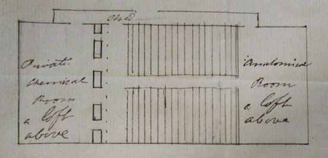

Thomas Beddoes to James Watt, 27 May 1798

Problem – To erect a theatre with offices for lecturing in the physical sciences to 200 persons –
Dear Sir
If you can bestow any consideration on the above problem so as to write me a few lines not later than by your post of Wednesday Evg I should be very glad – The chemical lectures seem to have forwarded the taste for physical knowledge here – & a sum of money sufficient for the above purpose has been raised – say £800 or £900 – It will be easy to get £200 more – We wish that all the audience shd see all the furnaces, & that while botany anatomy or the like is going on in the theatre, chemical preparations may be making – That is to say the furnaces must <occasionally> be shut out from the theatre & connect with the private room by a door –
Mr J Watt said Fourcroy had quite a model of a elaboratory? If he is not gone, cd he give us a sketch of that?
I receive from time to time reports respecting signal cures by gasses – & the collection of reports respg nitrous acid will be interesting – Five very close-printed sheets are composed I have matter for 4 more – I was promised 1000 cases from Dublin – from Birmm I hoped for some communications, I had no promise – Had not Johnson’s listlessness <prevented me> from receiving copies of the above sheets, I had sent you & others a copy each – But he promises positively for next week – I am Dr Sir with compts to Mrs Watt
Yours truly
Thomas Beddoes
27 May
N.B. In the above sketch they complain that the anatomical room is too far from the lecturing room – I think this a squeamish objection –
Address: James Watt Esq / Heathfield / Birmingham
Endorsement: Dr Beddoes / 1798 May 27th / Chemical Theatre
MS: LoB MS 3219/4/29/31